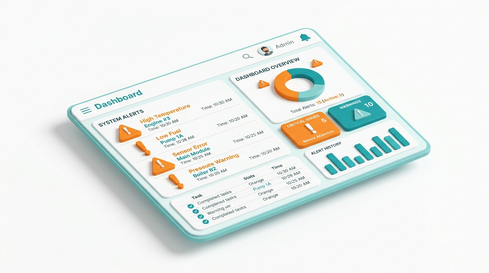

🟠 Severity: Moderate
Warnings List
These won't block most users completely, but they make the page harder to use for people with low vision, motor difficulties, or cognitive differences. Worth fixing once the critical list is clear.
Warning list
0
warning(s) found
No warnings here
No moderate-severity issues on this scan. Check Best Practices for extra polish ideas.
View Best Practices →